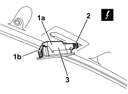
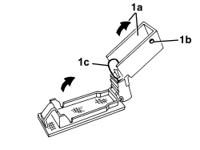

7040E24 LOWER COURTESY LIGHT IN DOOR PANEL - R+R
- Path
- Procedures > 70 FITTINGS > 7040 BODY INTERIOR FITTINGS AND TRIM > 7040E INTERIOR COURTESY LIGHT SYSTEM > 7040E24 LOWER COURTESY LIGHT IN DOOR PANEL - R+R
- Kind
- repair procedure (removal / refitting; the operation number is the code)
- Applies to
- all engines; all production periods
- Interactive page
- https://sloeber94.github.io/elrnDB/alfa/159/en/#/939011254
Applies to: all engines; all production periods
 Removing
Removing
 Refitting
Refitting- Open the door.
1. Extract the courtesy light (1a) releasing the retainer (1b).
2. Disconnect the electrical connection for the courtesy light.
Description | Component |
|---|---|
LEFT FRONT DOOR LIGHT (COURTESY) | |
RIGHT FRONT DOOR LIGHT (COURTESY) |
3. Keep the courtesy light.

Applies to: all engines; all production periods
1. If necessary, to replace the bulb, lift up the protection (1a) releasing the retainers (1b).
Extract the bulb (1c) from the bulb holder (press-fit).

Applies to: all engines; all production periods
Refitting
Removing- Check that the courtesy light and the bulb are not damaged.
- If removed, refit the bulb in the bulb holder, then close the protection.
- Connect the electrical connection to the courtesy light.
- Place the courtesy light in position and attach the retainers.
- Check that the courtesy light is working properly.
Topics linked from this page (2)
Topics that link to this page (24)
- 5505A42 CONTROL UNIT (DIGITAL NETWORK NODE) IN DRIVER'S DOOR - R.R.
- 5505B11 FRONT DOOR WIRING (ONE) LEFT OR RIGHT - R.R
- 5570T90 FRONT SPEAKER (ONE), LEFT OR RIGHT - R.R
- 5580E18 ANTI-THEFT DEVICE W/L - R+R FOLLOWING ELECTRICAL WIRING CHECK
- 7005A09 FRONT SIDE DOOR INTERIOR SUPPORT FRAME - R.R.
- 7005C11 FRONT SIDE DOOR EXTERIOR HANDLE - R.R
- 7005C41 FRONT SIDE DOOR EXTERIOR HANDLE LOCK CONNECTION LINK - R.R
- 7005C53 FRONT SIDE DOOR INTERIOR OPENING HANDLE (ONE), LEFT OR RIGHT - R.R.
- 7005D15 FRONT SIDE DOOR DESCENDING WINDOW GLASS (ONE) LEFT OR RIGHT - R.R
- 7005D25 FRONT DOOR WINDOW REAR GUIDE - R R
- 7005D26 FRONT SIDE DESCENDING WINDOW GLASS SCRAPER (OUTER) (ONE), LEFT OR RIGHT- R.R
- 7005D30 FRONT SIDE DESCENDING WINDOW GLASS SCRAPER (INNER) (ONE), LEFT OR RIGHT - R.R.
- 7005D33 CHANNEL FOR DOOR DESCENDING GLASS INNER GUIDE (ONE) LH OR RH ON FRONT SIDE DOOR - R.R.
- 7005E10 FRONT SIDE DOOR INTERIOR PANEL - R.R.
- 7005E50 FRONT SIDE DOOR PILLAR TRIM (ONE) LH OR RH - R.R.
- 7005M26 ELECTRIC WINDOW MECHANISM FOR ONE FRONT DOOR LH OR RH - R.R
- 7005M29 FRONT SIDE DOOR ELECTRICALLY OPERATED WINDOW MOTOR, LEFT OR RIGHT - R.R
- 7005N21 FRONT SIDE DOOR LOCK MOTOR/LOCK ASSEMBLEY FOR ONE DOOR, LEFT OR RIGHT - R.R.
- 7005R30 ELECTRICALLY CONTROLLED DOOR MIRROR (ONE) - R+R
- 7205E36 STRIPPING FRONT SIDE DOOR
- E2521 PUDDLE LIGHTS - WIRING DIAGRAM
- E2521 PUDDLE LIGHTS - COMPONENT LOCATION
- E2521 PUDDLE LIGHTS - WIRING DIAGRAM
- E2521 PUDDLE LIGHTS - COMPONENT LOCATION